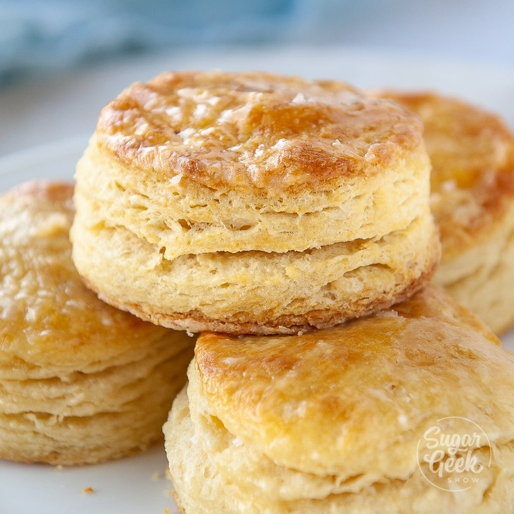

Biscuits
Ingriedients
- Pillsbury biscuit dough
- Oven
- Cockie tray
- Tin fiol
Instructions
- Pre-heat oven to 400 degrees
- While oven pre-heats, wrap coockie tray in tin fiol
- Open biscuit dough and place biscuits on tray. Make sure none of them touch eachother
- When oven reaches temp, place the coockie tray into the oven
- Let bisuits bake for 8-11 minutes
- Afer time expires, take tray out of oven and let them rest
- Enjoy
Description
These are light and fluffy biscuits,
perfect for breakfasts. Each one is sure to bring a smile to
your face. It is easy to make and easy to share. One tin can make up to 8 biscuits.
